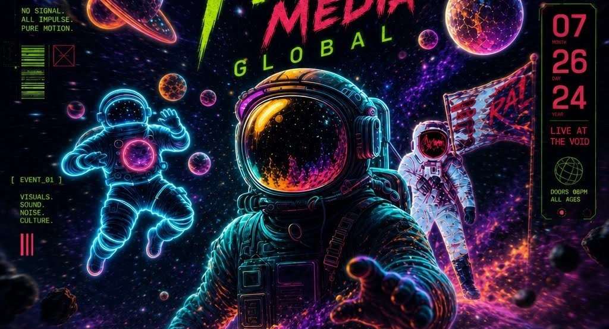

TOP STORY
The Launch · November 20, 2026
Feral Global Media Stands Up Its Own Page — and Opens the Door
Schoolcraft, Michigan — Feral Global Media, the independent storytelling studio founded by Jeffrey Michael Gurd, launched its own LinkedIn Page today and put its flag in the ground: this network is being built in the open, and it is being built with whoever shows up.
“Ask for collaboration from every angle. Get in where you fit in.”
The logistics are simple, and they run on the same stages this whole network is organized by:
1 · Pick your stageLocal crew → regional contributor → national project → global reach.
2 · Pick your laneFilm, animation, art, writing, music, comedy, editing, streaming — or a skill we haven't named yet.
3 · Get inComment on the Page, send the Page a message, or open an issue on the GitHub repo with what you make and where you fit.